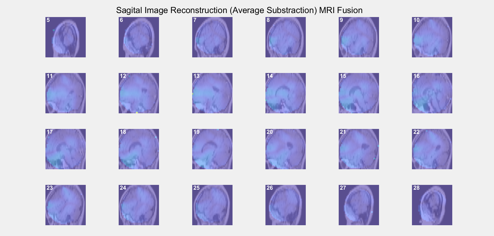

Rekonstruksi volume 3D dari proyeksi 2D Electrical Capacitance Volume Tomography untuk deteksi dini perubahan distribusi kapasitansi pada otak.

Bagaimana membaca hasil ECVT?
- Axial / Coronal / Sagittal: tiga irisan ortogonal; perubahan intensitas menandakan perbedaan konduktivitas/permitivitas jaringan.
- Konsistensi antar irisan: pola yang muncul konsisten di beberapa irisan → indikasi nyata, bukan artefak.
- Deteksi dini: bandingkan dengan baseline/healthy template; deviasi spasial-temporal kecil dapat menandai area perlu evaluasi lanjut.